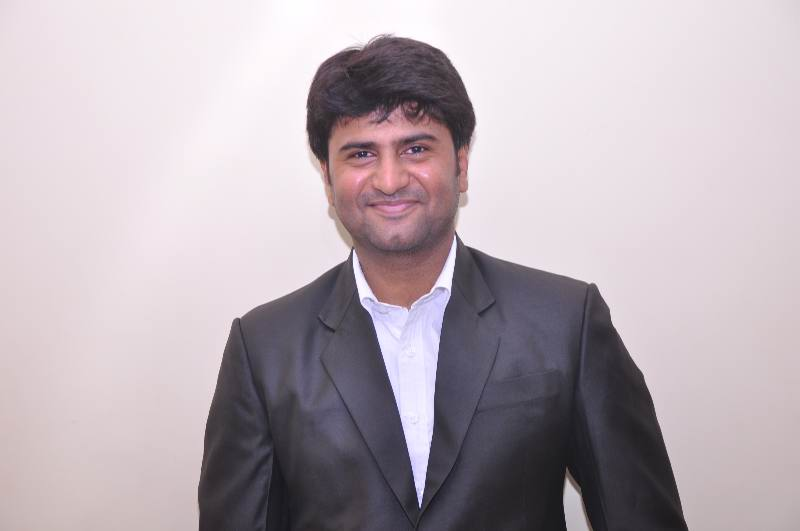

RESUME
NATARAJ SARMA DUVVURI
📧 natarajsarma427@gmail.com
📱 +65-80317741
Objective:
Proactive and result-oriented Team Manager with over 20 years of experience in IT Operations, Application Support, and Process Automation. Proven ability to lead cross-functional teams, manage service delivery, and implement operational excellence. Adept at stakeholder management, incident resolution, and driving continuous improvement initiatives.

PROFESSIONAL SUMMARY
| Organization | Role/Designation | Start Date | End Date |
|---|
| BANK OF AMERICA | Assistant Vice President/Global Production Support Service Lead | 12-Sept-2022 | Till date |
| UBS | Technical Support Analyst | 1-Nov-2018 | 02-Sep-2022 |
| Cognizant Technology Solutions | Technical Lead | 1-Apr-2012 | 31-Oct-2018 |
| Dell Perot Systems | Sr. Technical Associate Analyst | 5-Jan-2009 | 31-Mar-2012 |
| Sutherland Global Services | Sr. Technical Analyst | 10-Oct-2005 | 3-Jan-2009 |
CERTIFICATIONS
| Course | Issuing Authority |
|---|
| ITIL FOUNDATION CERTIFIED | EXIN |
| Oracle Solaris OCA certified | Oracle |
| Oracle 11g OCA Certified | Oracle |
| Splunk User certified | Splunk Certified |
| Azure Fundamentals | Microsoft Certified |
GPS LEAD Responsibilities at BOFA
- Overseeing and undertaking end-end project responsibilities
- Reviewing Changes, Incidents and automation requests to align with organization standards
- Monitor and control project risks, performing qualitative and quantitative risk assessments and establishing mitigation plans for critical production automation systems.
- Drove continuous process improvement by leveraging lessons learned, retrospective analysis, and KPI reviews to optimize future project performance.
- Liaise and coordinate with cross functional team to understand and leverage opportunities.
- Handling conflicts and escalations deftly to mitigate or nullify stakeholder and project impact.
- Ability to deal and liaise with individuals in a diplomatic way.
- Balance workload during peak release cycles by reallocating resources across support and project streams without impacting SLA adherence.
- Creating reports in visualization format and provide a forecast to senior leadership teams.
Technical Competencies
- Planning and testing of application, configuration and database changes, and installation of upgrades and patches and update production support documentation.
- Troubleshoot incidents for web and desktop applications, DBs, Autosys batch jobs.
- Automate routine tasks via VBA , shell/python scripting , RPA(Automation Anywhere) for productivity and efficiency.
- Creating Tools as per requirement of the project using html , css and java script.
- Monitor application performance and errors via tools like App Dynamics, Splunk and ISM NETCOOL and to achieve 100% SLAs and OLAs.
- Plan and perform patching activities on prem and cloud-based applications to ensure all services are up on pre and post patching.
- Disaster Recovery planning and implementation experience on support perspective.
- Led end-to-end Business Continuity Planning (BCP) exercises, including scenario simulation, recovery testing, and post-mortem analysis to ensure minimal operational disruption and compliance with enterprise resilience standards.
- Recommend & Implement enhancements for improving availability, reliability & performance of inhouse applications.
- Work in an Agile – Scrum and Kanban models integrated with ITIL.
- Root Cause Analysis (RCA): Drive deep-dive investigations into major incidents.
- Coordinate with development and engineering teams for code-level debugging and permanent fixes.
- Approve and guide bug fixes, hotfixes, and infrastructure changes.
SKILL SET
- Webservers like Apache-Tomcat / IIS / NGINX
- DNS
- HTML/CSS/JavaScript
- Knowledge of Red Hat Linux environment from an application support perspective
- Scripting on Bash, Python
- DB replication (Oracle Golden Gateway)
- Git/GitHub (Version control)
- Jenkins (Continuous Integration)
- Docker and Kubernetes (K8S)
- Supporting clients via GSNOW and Jira
- Expertise following Excel VBA / Unix / Java / Python / PL-SQL logs
- Adobe Marketing Campaign tool
- Experience in application communication and messaging systems (EMS / Apache Kafka)
- Manage and support Content Management Systems by Eidos Media
- Manage releases and deployment via Puppet and in-house applications
- Azure Administration on business applications
- Perform SQL Queries / DML’s on Oracle / PostgreSQL / Sybase and strong understanding of PL/SQL procedures and objects like triggers, functions, packages, etc.
- Good understanding of Big Data and Hadoop components like Yarn, Node Management, Sqoop, Spark, Hive, HQL
- Sound knowledge on OSI model and hands-on Windows troubleshooting (software/hardware/network expertise)
- Analyze data and errors via Splunk log analytics and troubleshoot production errors including management of Splunk user accounts (create, delete, modify, etc.)
- Automation of alert generation for AutoSys / Oracle / Linux server failures via Splunk log analytics, mapped to Netcool using IP Automation tool
Certifications
| Certification |
Issuing Authority |
| Project Management Professional |
Project Management Institute |
| ITIL Certification - IT Service Management Foundation Certificate |
Examination Institute for Information Science (EXIN) |
| ISTQB – International Standard Testing Qualification Board (Software Testing Foundation - Manual) |
ISEB |
| Oracle 11g OCA Certified |
Oracle |
| Oracle Solaris OCA Certified |
Oracle |
| Splunk User Certified |
Splunk |
| Azure |
Microsoft |
Scholastics
| Course |
University / Board |
Passing Year |
| M.Tech |
BITS, Pilani, Hyderabad, India |
2023 |
| B.Tech |
JNTU, Hyderabad, India |
2005 |
| Intermediate |
Board of Intermediate Education, A.P. India |
2001 |
| 10th Class |
Secondary School of Board, A.P. India |
1999 |